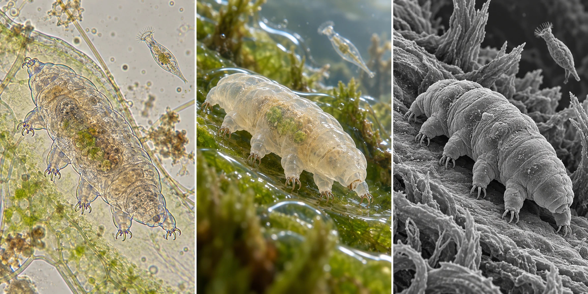
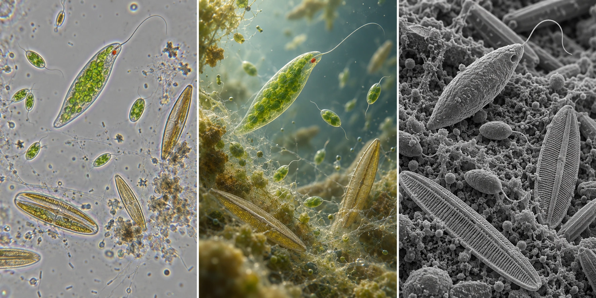

01
01Moss & litter frontier
Mites · roughly 0.2–1 mm selected bodies
Jointed legs, armor, humidity pockets and difficult terrain.
A visual and biological reference collection for realistic microscopic simulation—from mites among moss leaves to single cells moving through a biofilm.

A moss cushion can read as a landscape of leaves and mineral grains. Within its moisture, a tardigrade grips a surface. Narrow the field again and a ciliate becomes a fast moving body beside a slow, reshaping amoeba. At still smaller fields, individual algal cells and a biofilm become the environment.
These are overlapping views, not a biological ladder. A large single cell can rival or exceed a small animal in length. “Protozoan” is used here as an informal historical term for animal-like protists, not a single modern lineage.
Observed biology Described traits with linked evidence.
Gameplay possibility A possible translation of a trait; no chosen rules, progression, economy or game loop.
AI concept art Visual hypotheses. Use real images for morphology and scale.
01Mites · roughly 0.2–1 mm selected bodies
Jointed legs, armor, humidity pockets and difficult terrain.

02Tardigrades & rotifers · roughly 0.1–0.5 mm
Claw grip, attachment, filtering and the cost of drying.
03Amoebae & ciliates · tens to hundreds of µm
Shape change, ciliary motion, engulfing and contractile stalks.

04Small flagellates & diatoms · roughly 10–80 µm selected bodies
Light response, surface gliding, gradients and bacterial prey patches.
A screen enlargement is not an optical measurement. For the compound-microscope examples here, assume a 10× eyepiece and field number 18 mm, with no additional camera crop: total magnification = eyepiece × objective; specimen field diameter ≈ 18 mm ÷ objective magnification. These illustrative instrument assumptions are not measurements of the imported images. [S24]
| Objective | Total visual magnification | Illustrative field diameter | What fits |
|---|---|---|---|
| 4× | 40× | 4.5 mm | A small-animal neighborhood |
| 10× | 100× | 1.8 mm | Whole tardigrades and large cells |
| 20× | 200× | 0.9 mm | A few large protists |
| 40× | 400× | 450 µm | Small cells; a large amoeba may crop |
| 100× oil | 1000× | 180 µm | Cell detail; larger bodies crop |
Numerical aperture and wavelength limit detail; increasing display zoom does not reveal an otherwise unresolved flagellum or membrane. Higher-NA objectives also narrow the focus zone. [S17] · [S18]
An optical image, a hypothetical viewpoint within the water, and an SEM-style surface view reveal different information.
Compare visual treatments →Engulfing, gliding, retracting, sensing and dormancy already offer striking interactions with meaningful constraints.
Explore powers & dynamics →Moss films, pond margins and biofilms differ in chemistry, connectivity and community. Scale alone does not establish coexistence.
Explore the environments →